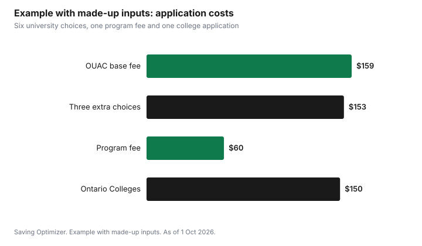

Education · Canada
Applying to Ontario Universities and Colleges for Fall 2027: OUAC and Ontario Colleges Fees and Deadlines

Applying to university in Ontario for fall 2027 costs $159 through the Ontario Universities' Application Centre (OUAC) for your first three program choices, plus $51 for each extra choice, as of 1 October 2026. Some programs add their own fee, such as $60 for University of Waterloo Engineering. Applying to Ontario colleges through Ontario Colleges costs $150 for up to five program choices. All of these fees are non-refundable. For current Ontario high school students, the OUAC deadline is 15 January 2027, and the college equal consideration date is 1 February 2027. Choosing programs deliberately, and knowing which extra fees apply, can keep a family's application bill in Canada to a few hundred dollars instead of much more.
Key takeaways
- OUAC undergraduate application: $159 for three program choices, then $51 per extra choice. Fees are non-refundable.
- Some faculties charge a program fee on top, from $25 to $172.50 in OUAC's list.
- Group A (current Ontario high school students) deadline: 15 January 2027. Universities respond by 28 May 2027 if you applied on time.
- Ontario Colleges: $150 for up to five choices, no more than three at one college. Equal consideration date: 1 February 2027.
- Deposits come later: universities may ask for acceptance or a deposit from 1 June 2027; colleges ask for tuition deposits in June 2027.
- Example with made-up inputs: six university choices, one program fee and a college application total $522.
OUAC fees for fall 2027
The OUAC undergraduate application is the single application for first-year undergraduate programs at Ontario universities. Its fee page, updated 1 October 2026, lists these amounts in Canadian dollars:
| Fee | Amount | What it covers |
|---|---|---|
| Base application fee | $159 | Your first three program choices; required of all applicants |
| Additional choice fee | $51 per choice | Each program choice beyond the first three |
| Program fees | $25 to $172.50 (selected programs) | Faculty admission processes, paid with the base fee |
| Document evaluation fees | $25 to $200 per university | Mostly Group B applicants; once per university |
A few rules matter for cost. Replacing a program choice with another program at the same university is free. Withdrawing a choice at one university and adding a choice at a different university costs $51 for the new choice. You can apply to as many Ontario universities as you like, but no more than three program choices at any one university, and fees are not refunded for choices you later withdraw.
Program fees at selected faculties
Some faculties charge their own fee for their admission process. OUAC's list as of 1 October 2026 includes:
| University and program | Program fee |
|---|---|
| McMaster University, Engineering | $50 |
| McMaster University, Honours Health Sciences | $30 |
| University of Toronto, Engineering | $45 (Group A) or $69 (Group B) |
| University of Toronto, Computer Science (St. George or Mississauga) | $52 |
| University of Toronto, Rotman Commerce | $52 |
| University of Waterloo, Engineering | $60 |
| University of Waterloo, Architecture | $60 |
| York University, Schulich BBA | $50 |
These are only admission fees. Many of these programs also ask for supplementary applications, essays, video interviews or portfolios with their own deadlines, which are separate from the OUAC deadline. Each university's admissions page lists them.
Group A or Group B
OUAC sorts applicants automatically. You are a Group A applicant if you are currently taking at least one Ontario high school course, are under 21 on or before 31 December 2026, and have or are working toward an Ontario Secondary School Diploma with six 4U or 4M courses. Everyone else is Group B, including Canadians outside Ontario, transfer students and mature applicants. The group affects deadlines and whether document evaluation fees apply. Group B deadlines vary by university.
Key OUAC dates for fall 2027
| Date | What happens |
|---|---|
| 15 January 2027 | Deadline to submit your completed application |
| By 28 May 2027 | Last day to expect a response (offer, refusal or deferral) if you applied by 15 January |
| From 1 June 2027 | Earliest day a university may require you to accept an offer or pay a deposit |
Applying earlier does not cost more, and some universities make early offers based on Grade 11 and early Grade 12 marks. Submitting well before 15 January also leaves time for supplementary applications, which often have deadlines in January or February.
Ontario Colleges fees and dates
Ontario's public colleges use a separate application through Ontario Colleges. The fee is $150, non-refundable, for up to five program choices, with no more than three at any one college. There is also a $5 transcript processing fee and transcript request fees from some institutions. The application for fall 2027 opened on 26 September 2026.
| Date | What happens |
|---|---|
| 26 September 2026 | Online application opened |
| 1 November 2026 | Earliest date colleges may send offers |
| 1 February 2027 | Equal consideration date; highly competitive programs need applications by this date |
| 1 May 2027 | Deadline to accept offers made before this date |
| June 2027 | Tuition deposits due at each college; each college sets the amount and deadline |
After 1 February, colleges consider applicants first-come, first-served while programs have space, and many programs stay open until classes start. For competitive programs, though, applying by 1 February is what matters.
How families end up paying more than they planned
- Adding choices late. Each extra university choice is $51, and a choice withdrawn later is not refunded.
- Program fees that are easy to miss. A single engineering or commerce choice can add $45 to $60 or more.
- Applying to both systems without a plan. A university and a college application together start at $309 before extras.
- Supplementary applications and tests. Some programs have their own costs outside OUAC.
- Deposits. Accepting an offer often means a deposit that may be non-refundable; read the terms before paying.
A plan to keep the cost reasonable
- List programs first, then universities. Three choices at the same university cost the same as three choices at three universities.
- Check which choices carry program fees and add them to your total before you submit.
- Use the free swap rule: replacing a program with another at the same university costs nothing.
- Decide early whether a college application is part of the plan, so you are not paying for one at the last minute.
- Set aside money now for the deposit in June 2027, and for residence deposits, which universities set separately.
- Apply for scholarships at the same time; many entrance awards are considered automatically with your application, and others need a separate form.
| Item | Count | Fee each | Total |
|---|---|---|---|
| OUAC base fee (first three choices) | 1 | $159 | |
| Extra university choices | $51 | ||
| Program fees | Per program | ||
| Ontario Colleges application | $150 | ||
| Transcript or evaluation fees | Varies | ||
| Total |
Example with made-up inputs: one student's applications
These numbers are an example with made-up inputs about the number of choices; the fees are OUAC's and Ontario Colleges' published amounts as of 1 October 2026. A Group A student applies to six university programs, one of which is University of Waterloo Engineering, and also applies to one college program as a backup.
| Item | Cost |
|---|---|
| OUAC base fee (three choices) | $159 |
| Three extra choices at $51 | $153 |
| Waterloo Engineering program fee | $60 |
| Ontario Colleges application | $150 |
| Total | $522 |
If the student drops one extra university choice that they would not attend anyway, the total falls by $51 to $471. If the college backup is applied to only after university responses arrive, there is a risk that a competitive college program is already full, so that saving needs to be weighed against the 1 February equal consideration date.

After the application: costs to plan for
The application fee is the smallest cost. Once offers arrive, a family faces acceptance deposits, residence deposits, first-term tuition and the cost of moving. Ontario tuition at public institutions may rise by up to 2% a year from 2026-27, and Ontario's student aid now gives at least 75% of its provincial portion as loans, so planning ahead matters more than it did a few years ago. The first-year university budget covers the full list, and RESP withdrawals are explained in the EAP and PSE guide.
Common mistakes
- Missing a supplementary application deadline because only the OUAC date was on the calendar.
- Paying for a seventh or eighth choice the student would never accept.
- Forgetting that fees for withdrawn choices are not refunded.
- Assuming college and university applications share one fee; they are separate systems.
- Leaving no money aside for a June deposit.
Sources
- Ontario Universities' Application Centre, Undergraduate fees (ouac.on.ca/guide/undergrad-fees), as of 1 Oct 2026. Base fee $159; additional choice $51; program fees and document evaluation fees; non-refundable; swap rule.
- Ontario Universities' Application Centre, Undergraduate Application Guide and Applying to Ontario's Universities, as of 1 Oct 2026. Group A and Group B definitions; 15 Jan 2027 deadline; responses by 28 May 2027; deposits from 1 Jun 2027.
- Ontario Colleges, Application fees and Important dates for fall 2027 programs (ontariocolleges.ca), as of 1 Oct 2026. $150 fee for up to five choices; $5 transcript processing fee; 26 Sep 2026, 1 Nov 2026, 1 Feb 2027 and 1 May 2027 dates; June tuition deposits.
- The number of choices in the example and its totals are an example with made-up inputs.
Frequently asked questions
How much does it cost to apply to Ontario universities for fall 2027?
As of 1 October 2026, the OUAC undergraduate application costs $159 for your first three program choices and $51 for each additional choice. Some programs add a program fee, and Group B applicants may pay document evaluation fees. All fees are non-refundable.
What is the OUAC deadline for fall 2027?
For Group A applicants, current Ontario high school students, the deadline to submit a completed application is 15 January 2027. Group B deadlines vary by university, and supplementary applications have their own deadlines.
How much is the Ontario Colleges application fee?
The Ontario Colleges application fee is $150, non-refundable, for up to five program choices, with no more than three at any one college. Applications received and paid by 1 February 2027 get equal consideration for fall 2027 programs.
When do Ontario universities send offers?
If you applied by 15 January 2027, you can expect a response from each Ontario university by 28 May 2027. Universities may require you to accept an offer or pay a deposit starting 1 June 2027.
Can I change my program choices for free?
Replacing a program choice with another program at the same university is free. Adding a choice at a different university costs $51, even if you withdraw another choice, and fees for withdrawn choices are not refunded.
Researched and drafted with AI assistance and fact-checked against official Canadian sources. How we create content.
Disclosure: Saving Optimizer may earn a commission if a partner link is added later, such as a student bank account or test prep offer type. No partnership with OUAC, Ontario Colleges or any institution is claimed on this page, and no school is ranked. Education only.